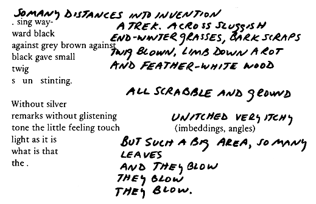

. Plum grainy
veins, unfathomable
noises, moues and wrinkle winkle
Plumb line, pul-
sing, eye to eye, drinks dusks of light.
One year after, like a punctuation; one month together, as if these times had meaning, particular meaning, instead of an arbitrary path cut through possibly a mistaken hole in the floor, they thought the radiator was smaller, and there it is, an unfilled circle ninety years old.
full moon, and hardnessMy mother I will, she said.
•

. word. Blue
(pants, trousers, cover-
alls) Blue, all )"There is Mr. Ashley, narrating tempered drophis 'songs' or 'stories' in a intogentle, sing-song chant--what the morning bizniz sweethe terms 'vocal inflections
whistles, their hustle lowthat you might call singing.' "
the-y fl-y one (tows) three. Stroke in the air, wobble a tune, wow.
Two red tickets set at an angle--
•
Imbedding someextruding somethe interplay between selection, imbedding, and loss. Some few words, chosen, and why; but are also chosen from, once the day was awash in pinpricks, a pull in the back muscle, overlay and no experience. No experience because all.Say.Saw.Operations. Addictions. And noshadow and it was
dark within this icyone knowsbrightness all disappearing all intensewritingwhat;does it save it? "diaristic" in impulse, but unbargained, imponderable. Over written. Written then over written, over ridden, the selection is one thing, this
(the globule, clot) another. Different plans and different pictures.
uneven picture patterns, Most poetry something--irregular blocks, a rebus imagery, structure.trued, held in a rose-pink border.
Dreaming I'm crying it's she's crying.
. Snaggles, spiggles, stalks peck out snow.
Fresh, purple, haiku, heuristic. birds. cumulus color of red sandstone, coal shaleresume
theyand close tabulated bunchingresume
re theyunfirm unpleasant undulantre who
tchounconscioustcho
pattern upcrests, its oppositepitter pity
hole in thetouching hard and fastthey poke a
housedisperselittle nest
thick places
bound to violent narratives.
Marginalia without a center? No beginning, No. No
. One word oneending? No, because form "word" kkhkkhggghat all times is instilled. 0 noble Koré la lathat ongo--
threaded into the dyadingness that entrance into speaking both ends beading, gleaming
gargle. Conventionally, "goo gah."encapsulated
eyes burning
Big finger to the little sleeping mouth
It was all cracking
makes sure,
the even silence breathing.
Narrative: the oedipal plot? ends by revealing the hidden
father. Pre-oedipal plot? the mother, hidden. Split subject:
"a living contradiction." A text to speak now, writing,
writing the sung-half song.
 )"There is Mr. Ashley, narrating
)"There is Mr. Ashley, narrating